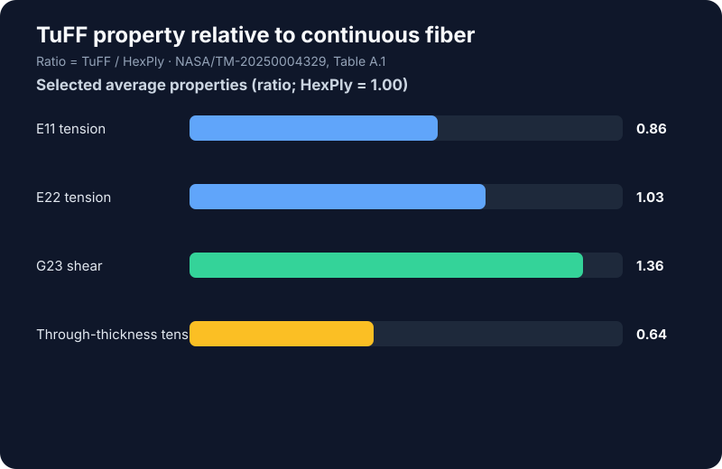

NASA technical memorandum · 2025 · Coauthored research
Experimental Characterization of HexPly and TuFF Composites
Quasistatic tests and material-property extraction for continuous and discontinuous IM7/PEKK composites.
Scope
The study compares a continuous-fiber HexPly unidirectional composite (HUDC) with a highly aligned, discontinuous-fiber TuFF composite (TSFC). The team conducted room-temperature, quasistatic tests across loading directions, reported stress–strain curves, and assembled material properties for composite modeling.
Test program
The NASA report documents 11 test types, including tension, compression, and shear tests. It also reports density and fiber volume fraction. Procedures follow applicable ASTM standards as closely as possible, with deviations documented in the report.
Selected results
The TuFF system had elastic moduli within 15% of the continuous-fiber material in the three principal directions. In the report's summary table, TuFF-to-HexPly ratios are 0.86 for longitudinal tensile modulus (E11T), 1.03 for transverse tensile modulus (E22T), 1.36 for G23 shear modulus, and 0.64 for through-thickness tensile strength. These are selected averages, not universal material constants.
Interpretation
The results show that aligned discontinuous fibers can retain several stiffness measures close to the continuous-fiber reference while improving some transverse and shear properties. Through-thickness tensile strength is a clear tradeoff; the report describes a reduction of roughly 40% for TuFF.
Attribution and source
This is coauthored work by Ashutosh Maurya, Sateesh Pechetti, Howard Chen, Subramaniam Rajan, Javier Buenrostro, J. Michael Pereira, and Sandi G. Miller. Data and plot are based on Table A.1 of NASA/TM-20250004329.
